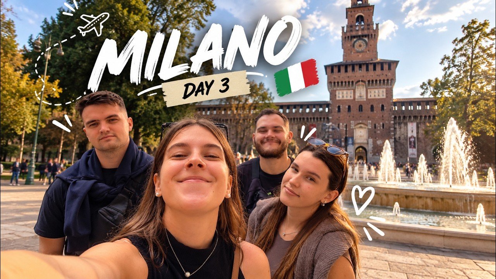

Every trip, as it happened.
Phone clips in, finished film out. 10 films from 4 trips, all cut by Claude in Wayfare Studio from the maker’s own clips. The films are in Slovenian.

This film isn’t online yet.
Phone clips in, finished film out. 10 films from 4 trips, all cut by Claude in Wayfare Studio from the maker’s own clips. The films are in Slovenian.

This film isn’t online yet.
Wayfare Studio is downloading
Wayfare-Studio-0.1.0.dmg · 434 MB
This Mac may not be supported
Your Mac seems to have an Intel processor. Wayfare Studio runs on Macs with Apple silicon (M1 or newer).
Wayfare Studio is made for Mac
It runs on Macs with Apple silicon (M1 or newer) and macOS 12 or later. There’s no Windows or Linux version yet.
Download it on your Mac
Wayfare Studio is a Mac app. Send yourself this page and open it on your Mac.